I load the video using opencv-python(cv2) library.
I get the number of frames, width, height and frame per second.
Since converting python list to numpy array is too slow, I make an empty array and insert each frame into the array.
I change the order of the image channel because cv2 load an image or video data in BGR format.
I divide the video by 255 to convert the values to double-precision in the range [0, 1].
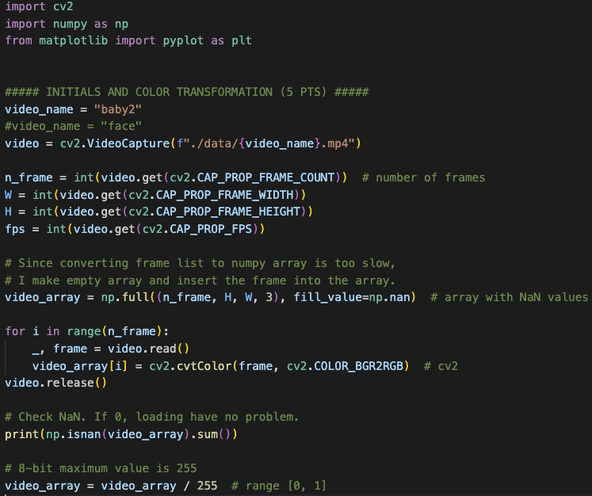
Fig 1. Load the video and conver to double-precision in the range [0, 1]
I convert all frame to YIQ color space (FCC NTSC Standard).
Using 'dot' method in numpy, we can transform the color easily
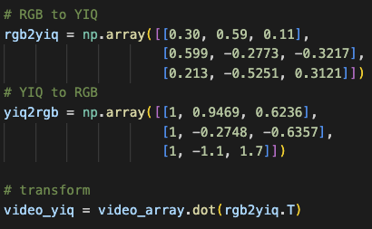
Fig 2. RGB to YIQ transformation
I also check the range of the YIQ values.
The value I compute is whitin the correct range.
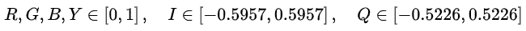
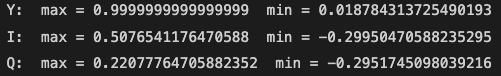
Fig 3. The range of the YIQ
LAPLACIAN PYRAMID (20PTS)
For efficient computation, I make the empty array pyramid with NaN values.
Each frame is down-scaled and up-scaled sequentially by pyrDown and pyrUp functions, which can construct Gaussian pyramid.
The last image is same as the last one in Gaussian pyramid.
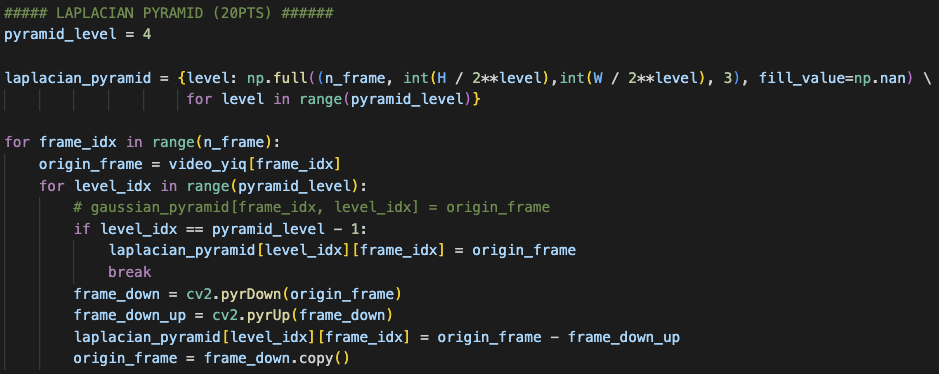
Fig 4. Laplacian pyramid
TEMPORAL FILTERING (30PTS)
For filtering, an index corresponding to a specific frequency of the Fourier transform result must be obtained.
Since the maximum observable frequency is fps / 2, the last index of the fft result is also fps / 2.
Using this fact, we can get the frequency interval of an array(hop size) and the corresponding index of the specific frequency.
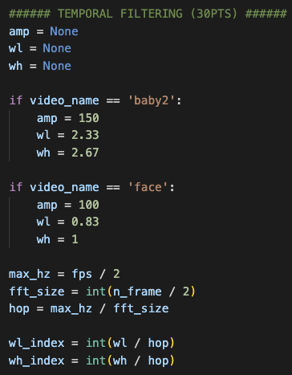
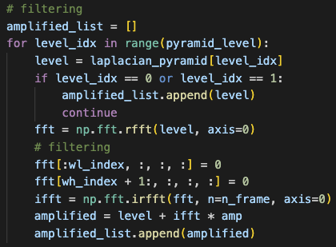
Fig 5. Temporal filtering
The first and second image are not filtered according to the paper and the filtered result is amplified and added to the original Laplacian pyramid.
Fig 6. The amplified Laplacian pyramid.
EXTRACTING THE FREQUENCY BAND OF INTEREST (30PTS)
As shown below, the result of fft seems to have an outliers in the lowest frequency.
To remove it, I remove the front part of the array by about 1 percent.
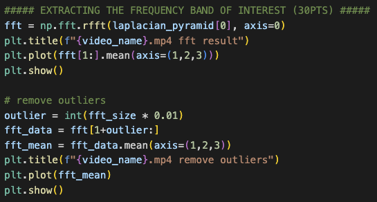
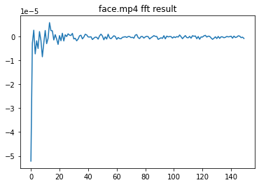
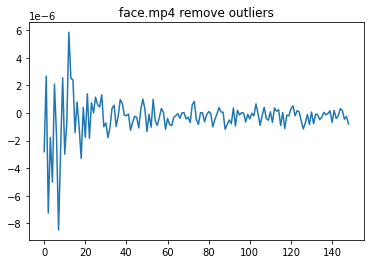
Fig 7. Visualization of fft results
First, I defined the frequency band of interest as the area with a large change in value.
To extract this, I set a range of frequencies and find the area
with the largest difference between the maximum and minimum values within the window corresponding to the range.
Using the proposed method, I find that the 'face.mp4' video have 0.5 ~ 1 Hz that is similar with the values presented in the paper.
However, this method has disadvantages in that the range is fixed and the area varies depending on the range.
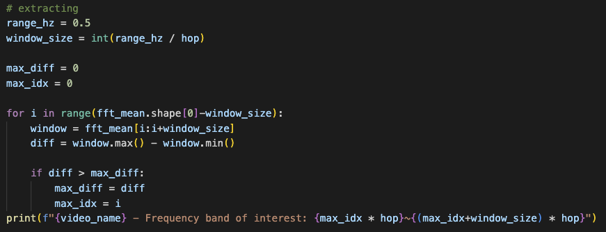
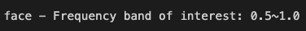
Fig 8. Extracting the frequency band of interest
IMAGE RECONSTRUCTION
I reconstruct the amplified image by upscaling and adding the Laplacian pyramid repeatedly.
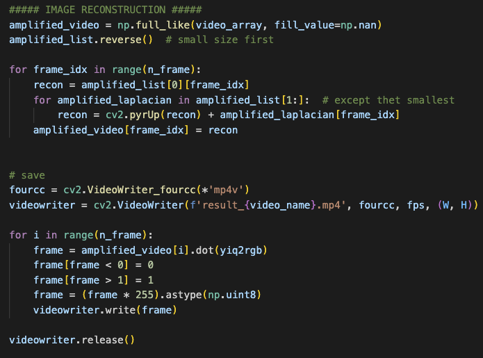
Fig 9. Reconstruction code
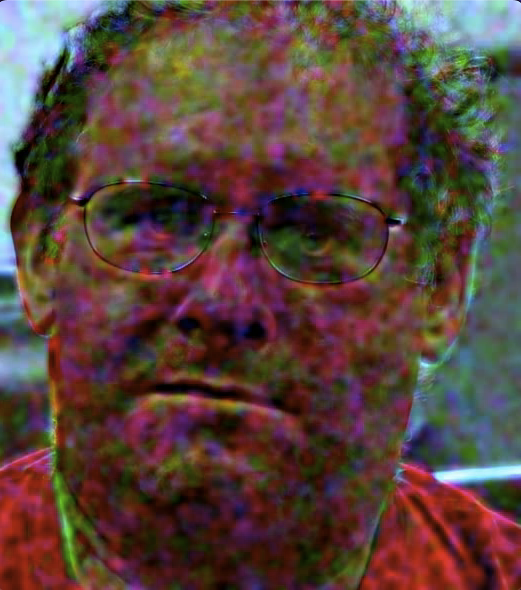
Fig 10. Reconstruction result
Although the skin color changes similarly to the video presented in the paper,
it does not seem to have been implemented properly because of the noise and the moving face.